DocuSign Guide for Chubb
May 10, 2018
DocuSign Sandbox
How to Create a New Template
1. Under the Template tab, click the 'New' button. You can select create new or upload a template if you are updating a current form.
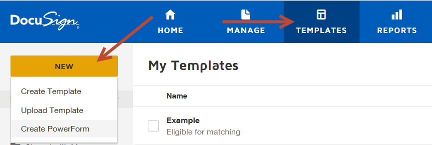
2. Name the form templates to match the naming convention standards (see Forms Specific Requirements document).
- Add template description (See Forms Specific Requirements document).
-
Name: StateAbbrFormNameYYYYMMDD (ex. CAUM_UIM SELECTION FORM20180801)
-
Description: Uninsured and Underinsured motorists Protection (UM/UIM) Selection Form for California
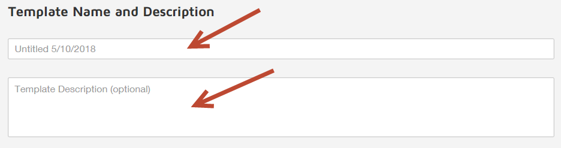
3. Upload Form to build template over.
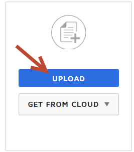
4. Set Signing Order. If the form will need to go to a third party, you will need to add a second recipient, otherwise the only recipient would be 'Insured'
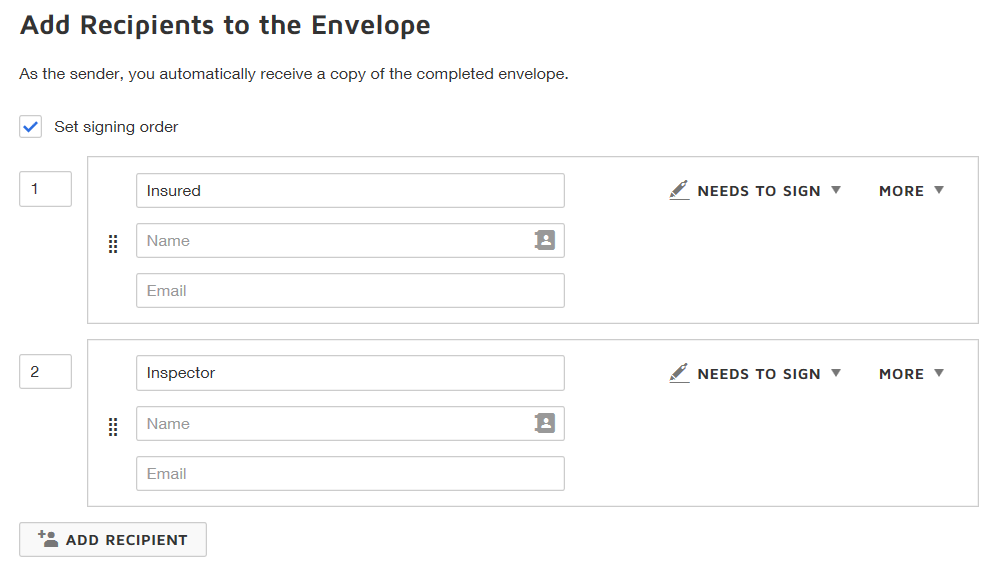
-
Scroll down to Advanced Options and select 'Edit'
-
Under 'Sender Settings' uncheck 'Affix envelope to top left of every document page'
-
Click 'Save'
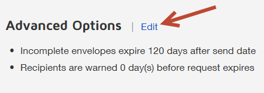
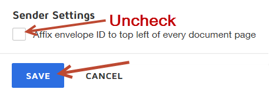
Select 'Next' in the upper righthand corner.
Navigate to the custom fields and drag the Envelope ID in the bottom left corner of the template.
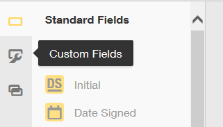
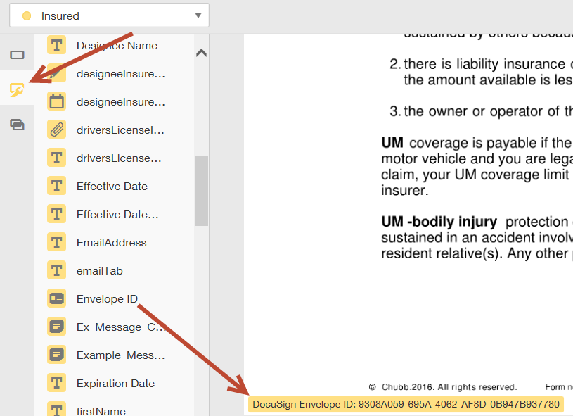
- All the input fields in one page should be anchored to one common 'String' in that page.
- Do not create any conditional logic until all fields are added and named. The first conditional logic should be for the Bypass.
- If we place an input field over a line in the form, we follow the left alignment. The signature field here we can align to the left.
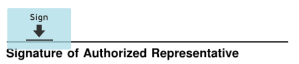
- Try placing template fields slightly lower than where they should be as they tend to rise when testing the template.
- 'Field Order' should contain the sequential order for tabbing through the template.
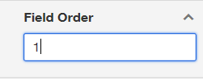
- For all text box fields in the template where we need an input, we should keep the 'Fixed width' option checked to make sure the entered data does not overflow. You can find this option in the 'Formatting' part of text box properties at the right hand side. And we can add tooltips to the all input fields wherever required, which appears as a help text to the signer when he hovers over a particular field. Font: Helvetica, Size: 10.
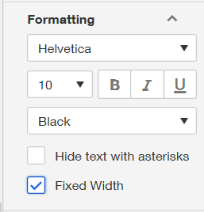
- Radio Buttons - should be used for when only one option can be selected from a list of options. If multiple options can be selected, use checkboxes.
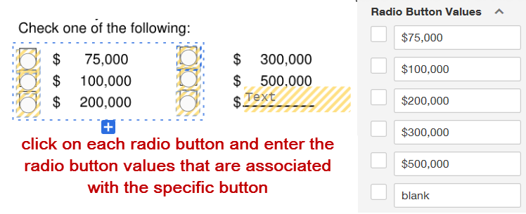
- Creating the By Pass
- Add to same page as signature.
- Group Label must be 'Bypass selection Q4625000 (2018)'. If creating a new form, the year is not required on a new template. This is due to the need of having a unique Bypass name.
- Bypass also needs to be anchored.
- Bypass fields can be found on the 'Custom Fields Tab'.
- The 'Bypass_Yes' and 'Bypass_No' go under the Bypass notes and are included in conditional logic.
- Check the 'Agree to Sign' box so the template is opened with 'Agree to Sign' logic enabled.
- Set the conditional logic of the Bypass before any other conditional logic.
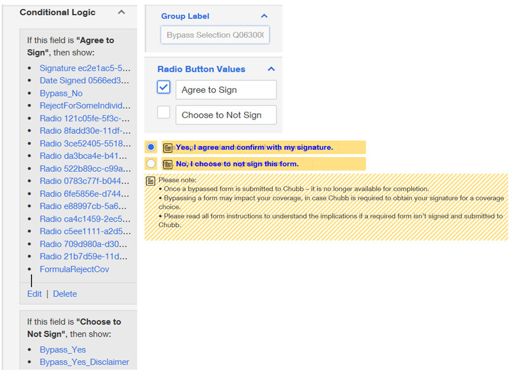
Replacing a form on an existing template
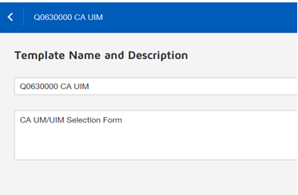
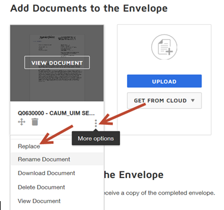
Creating a copy of a template
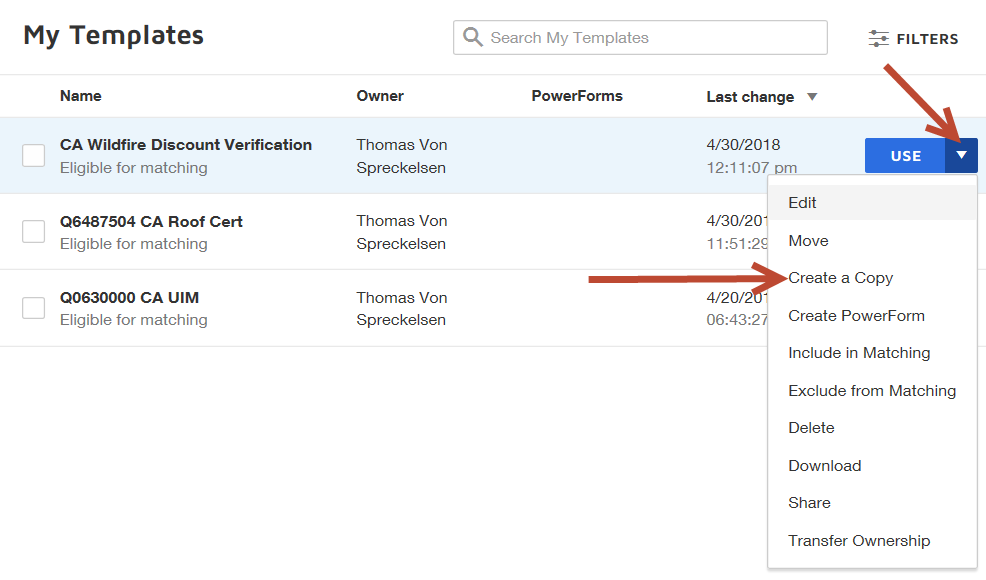